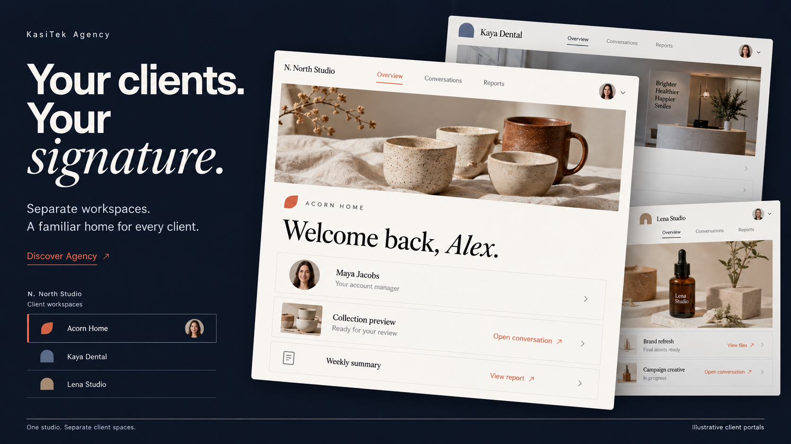
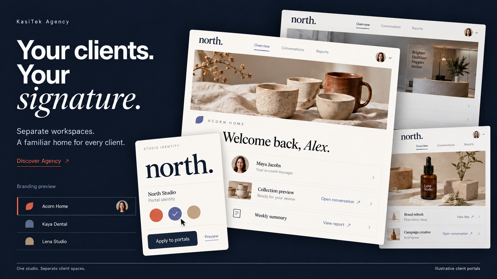
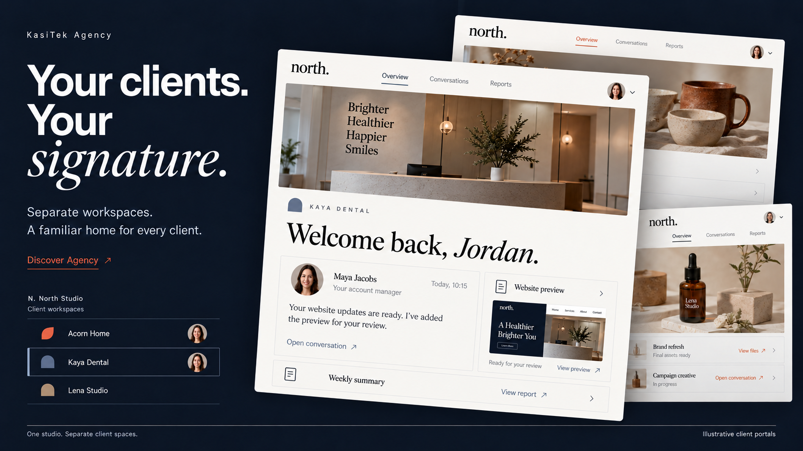

Your clients. Your signature.
A new direction for Agency. Layered client portals, an ink backdrop, and a studio identity carried across every workspace.



Opening view. The client portals fan into position, with Acorn Home in front and the other businesses still visible.